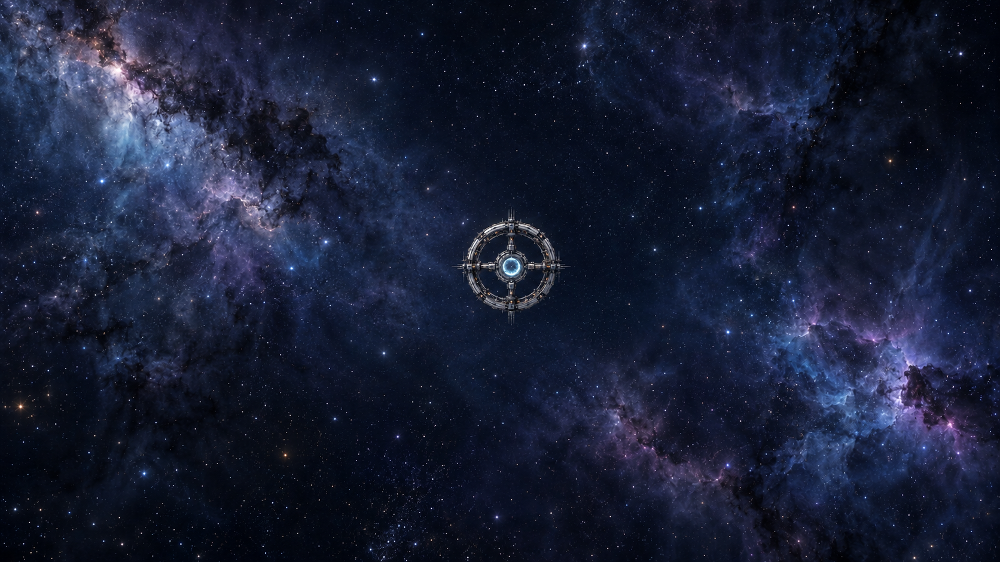

ASTRA PROJECT · 深空信标计划
今夜它将要醒来。滚动即航行——每一次滚动都向它逼近一程，停下，星辰也为你静止。
三章 · 航程 120.0 KM · 自动漫游见右下 · 建议开启声音
CHAPTER 02 · RENDEZVOUS
轨道缓缓修正，对接环在沉睡一个世纪后解锁，港灯为你亮起。
CHAPTER 03 · IGNITION
点火序列启动，晶体环逐环亮起——请回应来自星海彼岸的呼叫。
本站由 JavaScript 与 Canvas 实时渲染驱动，请启用 JavaScript 后访问。ASTRA · 深空信标计划